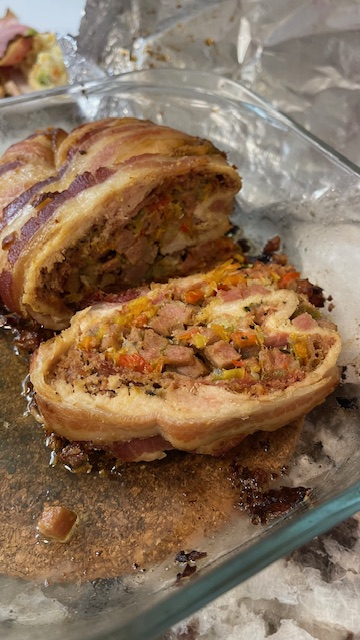

Stuffed Chicken
Ingredients
- 4 Chicken Breasts
- 1 Green Pepper
- 1 Red Pepper
- 1 Yellow Pepper
- 1 Orange Pepper
- 200gr. Ham (slice)
- 200gr. Cheese (slice)
- 300gr. Bacon (to wrap)
- 1 can of Spam (or diced ham or sausages)
- Salt and pepper to taste

Preparation
- In a frying pan, place the chopped spam over low heat and let it sauté slowly.
- Chop the breasts into fillets and crush to break the fiber a little and join the four breasts together.
- Season with salt and pepper to taste.
- Chop the peppers and place in the pan with the span and fry until soft.
- Place the sliced ham and cheese on the breasts.
- Place the span and pepper preparation.
- Roll up and then roll with bacon, tie everything to prevent it from opening during cooking.
- Bake at 180°C or 350°F for 1 hour covered with aluminum foil, then uncover and continue baking until golden.